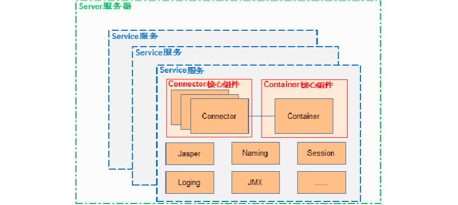
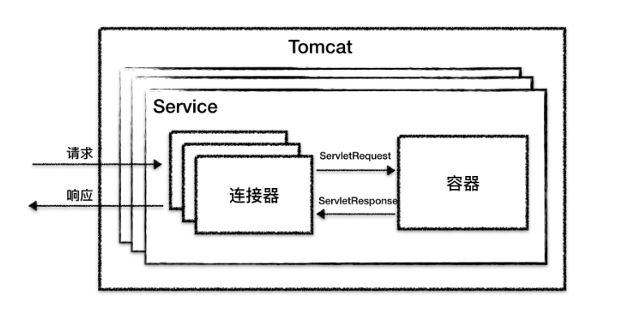
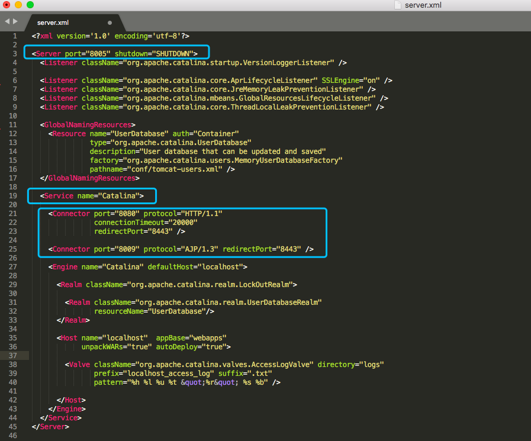
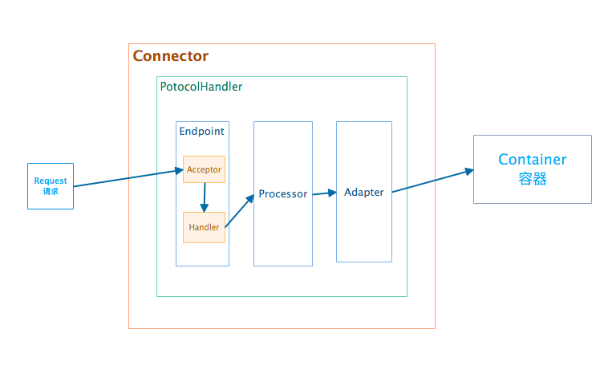
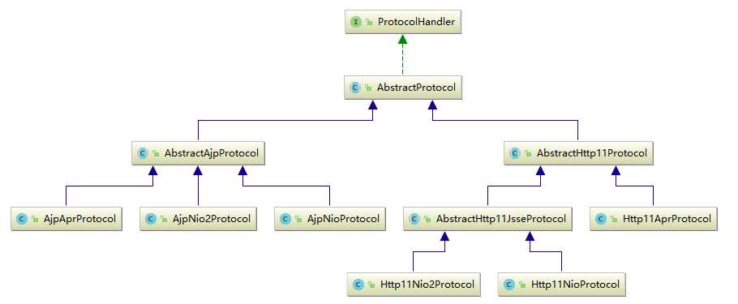
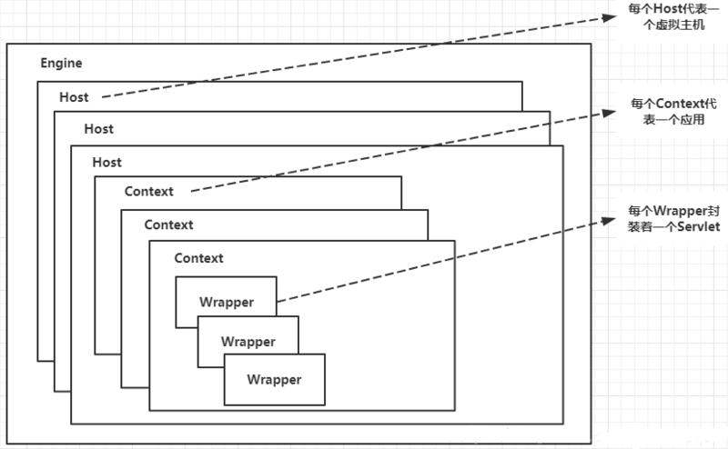

我们先来看一张比较经典的Tomcat架构图：

从这张图中，我们可以看出Tomcat中含有Server、Service、Connector、Container等组件，接下来我们一起去大致的看看这些组件的作用和他们之间的相互联系。在这之前，我们先补充一个知识点，也就是Tomcat它实现的功能点是什么呢？通过查找一些资料，这里参考下极客时间《深入拆解Tomcat_Jetty》中的总结，即Tomcat 要实现 2 个核心功能：
对应到架构图中，Tomcat 设计了两个核心组件：连接器（Connector）和容器（Container）来分别做这两件事情。连接器负责对外交流，也就是处理Socket连接，容器负责内部处理。
在介绍各组件之前，我们先关注一下下面这张关系图：

从图中可以看出，最顶层为Server(图中未标明)，也就是一个Tomcat实例。在一个Server下面可以有很多个Service服务，而每个Service服务又分为连接器和容器，也就是上面架构图中Connector和Container，其中连接器可以有多个，而容器只有一个，连接器Connector和容器Container之间的交互是通过ServletRequest和ServletResponse通信的。
Tomcat 内可能有多个 Service，这种设计是出于灵活性的考虑。通过在 Tomcat 中配置多个 Service，可以实现通过不同的端口号来访问同一台机器上部署的不同应用。
其实，我们可以关注以下Tomcat中conf/web.xml的配置：

下面，我们来着重看一下连接器connector和容器container的内容
Connector对 Servlet 容器屏蔽了协议类型及 I/O 模型等的区别，无论是 HTTP 还是 AJP，在容器中获取到的都是一个标准的 ServletRequest 对象。先来看一下Connector的设计结构图：

引用《深入拆解Tomcat_Jetty》中关于Connector的功能总结，主要有如下功能：
从上面的结构图中可以看出，在Connector中使用ProtocolHandler来处理请求，其主要包含3个组件，分别为Endpoint、Processor、Adapter等。我们来看下ProtocolHandler的接口及其子类的类图：

关于连接器Connector的具体内容将在后期单独做详细介绍。
Tomcat 设计了 4 种容器，分别是 Engine、Host、Context 和 Wrapper，其属于父子关系。具体可以参考上文提及的Tomcat中conf/web.xml。其具体的关系可以参考下图（来源：百度）：

这四种容器的应用范围为：
关于容器Container的具体内容将在后期单独做详细介绍。
本文主要介绍了Tomcat 的大体架构，也大致介绍了Connector和Container的结构，后面将以源码为基础，详细的介绍其中的组件内容及相关的技术实现。
欢迎关注本人微信公众号： 源码湾。 本公众号将不定期进行相关源码及相关开发技术的分享，共同成长，共同进步～